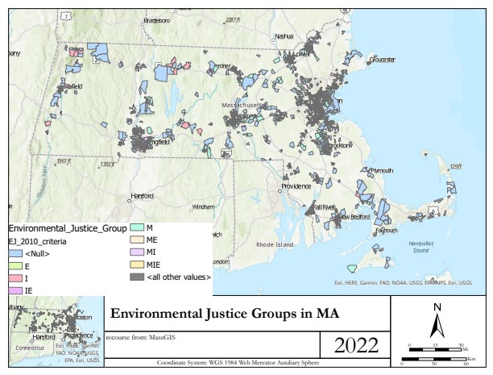

HOME
ABOUT ME
RESUME
PORTFOLIO
PORTFOLIO
Show all
GIS
Remote Sensing
Web Mapping
Air Quality Threats in the South Bronx
ReDetecting & ReExaminingHeat Vulnerability Index
Home in Lenapehoking
LuminLeaf Lighting
ML in Urban Heat Island Prediction
Mapping Micro-Scale Heat Risk in New York City
Economic Transformation of NYC Chinatown
Evaluating the impact of various factors on forest loss in Amapa, Para, and Mato Grasso between 2000 and 2020

Spatial Relationship between Environmental Justice and TierⅡFacilities in Massachusetts
relationship between planting dates and rainfall in Zambia
Wildfire Burn Area Modeling in Colorado Using Multi-Layer Perceptron Classification
Land change in Guam from 2006 to 2020
Measuring Differences between Rank Variable Wildfire Risk and Burned-Unburned Area Mask: A Case Study from Idaho
Clark University Wellness Center Design
Contact
please contact me at my email address
Email
Email: m.wei2@columbia.edu